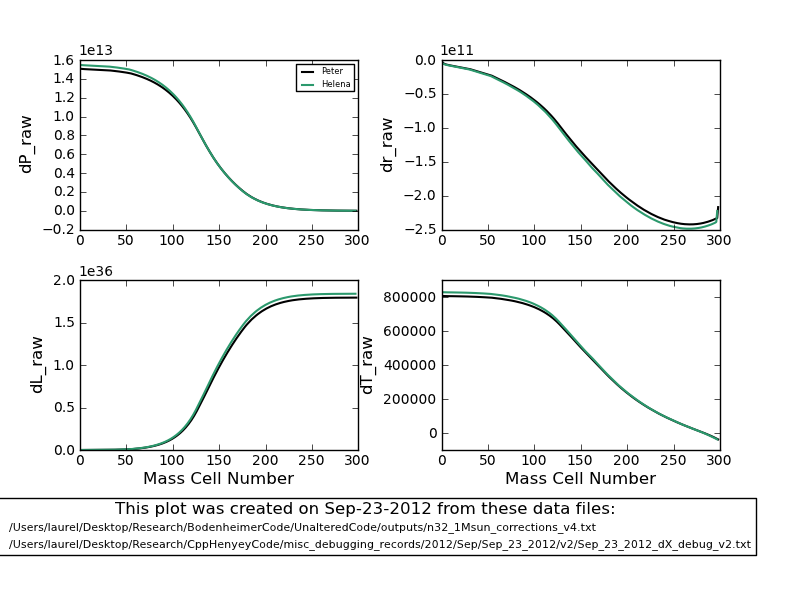
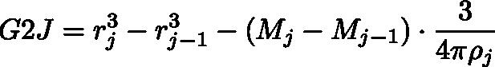

Figure
1
Date & Time: Sept. 22, 2012
Location: campus
Computing context: MachoMac
(/Desktop/Research/CppHenyeyCode/src, /Desktop/Research/BodenheimerCode/UnalteredCode)
From last time:
Test out how much of an effect fixing the G3J calculation/sign error in Helena has on fixing the overall dX problems
Done. Figure 1 illustrates just how little the dX profiles agree.
Figure
1
If the two dX profiles do not agree:
Use the python "dX walkthrough" scripts to gain further insight into the what's causing the profiles to (STILL!!!) disagree.
Modify Helena such that it prints out all the CDEGABS(inv)Sum info/values from each run into a distinct set of files.
Use the completed helena_wrapper python script to debug Helena's dX calculation process (which, as Figure 1 shows, is still not fully corrected.)
Need to redo the A and B matrix value calculations from the Peter-created CDEG inputs (w/ Helena)
I updated Helena to calculate G3J stuff correctly... no wait, if I feed Helena the PeterG values, it should be calculating the correct A and B matrix values.
Arg! So why are the dX profile calculations still not matching up??
To Do Today:
Here's a comparison of the dX value profiles that Helena generates from PeterCDEG inputs, vs. from the CDEG values it calculates itself (Figure 2):
The
dX profiles that Helena calculates from PeterCDEG inputs (left) vs.
from the CDEG values it calculates itself (right).
The
black profiles in both cases represent the dX profiles that Peter's
code generates for the same initial inputs.
Figure
2:
So, again: when given the PeterCDEG values, Helena can generate pretty accurate dX profiles. However, when using the CDEG values it calculates itself, Helena produces very different (much smaller) dX values (as compared to the Peter-code-generated benchmarks).
So, perhaps this is due to something involving the generation of the A profiles? Let's check this and compare the results between the two cases examined above.
A
comparison of the A values to the 'benchmark' ones generated from
the Peter code. Version 1, on the left, shows the A values Helena
calculated from PeterCDEG inputs. Version 2, on the right, shows
the A values Helena calculated from the CDEG values it created
itself. Both plots were generated from
compare_dX_forward_walkthrough.py, which takes the A matrix values
printed out by Helena as its inputs.
Figure
4
A
comparison of the A values generated from Helena using PeterCDEG and
self-generated CDEG inputs. The A values plotted here were
generated in compare_dX_walkthrough.py, from the CDEG values that
Helena printed out. Notice that the A values agree well, except at
the outermost mass cell.
The
Helena values were taken from:
Users/laurel/Desktop/Research/CppHenyeyCode/misc_debugging_records/2012/Sep/Sep_22_2012/v2
Figure
5
The
dP profiles calculated by compare_dX_walkthrough.py from Peter and
Helena-created CDEG inputs. Here, the dP behavior before and after
setting the outermost A values to their Peter-generated counterparts
is typical of all the dX profiles' behavior.
The
main feature is shown by the top and middle panels. Doing the
switcheroo outlined above makes the two dP profiles agree much more
closely.

Figure
6
Based on what Figures 5 and 6 are showing, I wonder if Helena would generate the correct dX values if I swapped in the PeterCDEG values at the outermost mass cell? Let's try this.
It does (see Figure 7), but I have to remember NOT to multiply the PeterCDEG values by -1.0 when I read them in in Helena when I do this type of switcheroo.

Figure
7
Obviously, the difference is being caused by the way the CDEG values are calculated at the outermost mass cell in Helena. So, let's look into that in more detail... again.
Of the outermost G values, it looks like G2 differs the most b/w Peter and Helena codes. G4 also differs, and G1 differs very slightly. G3 = 0 for both codes at the outermost mass cell.
Why would G2 be getting wonky at the outermost mass cell? For reference, the G2J equation is:

Equation
1
So,
need to check how the r, M, and rho values compare at the outermost
mass cell, first. (I think the j-1 values must be okay, b/c the
G2J values agree at the next-to-last mass cell)
At the outermost mass cell in Helena (j=jMax-1): Rj = 4.09457e+11 Rj-1 = 4.08921e+11 Ratm = 1.25293e+10
In the fortran code, Ratm = 16612759924.1228 (~1.6e10)
Okay, I think I may have figured out what's going on here. Next time, I need to update my GnJ.cpp subroutines to use the outer boundary conditions given in eqns. (5.47) through (5.50) in the Peter cookbook.
In addition, the Ratm values that Helena and Peter's code are generating are *close* but not *exactly* equal to each other.
Were the Peter values I've been using in my debugging generated from the NO fusion version of the fortran code??? Definitely need to check this.
Back
up fortran and cpp codes to BitBucket
To keep in mind for later:
For the 1 Mjup model: do the Peter and Helena models' dX values (raw) now agree, too?